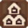
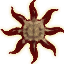
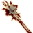

You can drag and drop your Oblivion save file (.ess) into this checklist to see your progress! Saves are typically located in User\Documents\My Games\Oblivion\Saves.Checklist items with a disabled checkbox will automatically be completed after checking off a quest they are part of.
Total Progress: 0%
| 0/212 | |
| 0/21 | |
| 0/198 | |
| 0/367 | |
| 0/60 | |
| 0/7 | |
| Houses Owned | 0/8 |
| 0/94 | |
| 0/109 | |
| Artifacts Found | 0/15 |
| Nirnroots Found | 0/306 |
| 0/10 | |
| 0/8 |
Quests Completed
Main Questline
Dark Brotherhood
Initiation Quests
Contract Quests
Fighters Guild
Mages Guild
Misc. Quests
Thieves Guild
Daedric Shrines
Master Training
Misc. Quests
Journal-Filled ⚠
Master Skills
Stores Invested In
Skill Books Read
Misc.
Oblivion Gates Shut
Main Quest Pt. 1
17 Fixed Generic Gates
40 Random Gates ⚠
Houses Owned
Benirus ManorAnvil
Bravil House for SaleBravil
Bruma House for SaleBruma
Cheydinhal House for SaleCheydinhal
ArborwatchChorrol
Shack for SaleImperial City
Leyawiin House for SaleLeyawiin
Rosethorn HallSkingrad
Horses Owned
Artifacts Found ⚠
Azura's StarAzura
Masque of Clavicus VileClavicus Vile
Oghma InfiniumHermaeus Mora
Saviour's HideHircine
VolendrungMalacath
Ebony BladeMephala
Ring of KhajiitiMeridia
Mace of Molag BalMolag Bal
Ring of NamiraNamira
Skeleton KeyNocturnal
Spell BreakerPeryite
Sanguine RoseSanguine
WabbajackSheogorath
Skull of CorruptionVaermina
Greater Powers ⚠
Pilgrim's Grace9 Wayshrines
Max Faction Ranks ⚠
ListenerDark Brotherhood
MasterFighters Guild
Arch-MageMages Guild
Honorary KnightKnights of the Thorn
Champion of CyrodiilOrder of the Dragon
Knight-ErrantKnights of the White Stallion
Sister/Brother⚠Order of the Virtuous Blood
Gray FoxThieves Guild
Fame ⚠
Quest Fame
Main Quest
Fighters Guild
Mages Guild
Daedric Quests
Miscellaneous Quests
Arena Fight Fame
Places Found
Forts
Camps
Mines
Ayleid Ruins
Settlements
Shrines
Oblivion Gates
19 Fixed Gates
Random Gates ⚠
Caves
Nirnroots Found
Outdoor Circuit
City
Indoors
NirnrootImperialSewerSystemN01
NirnrootPellGateShafayesHouse
NirnrootVeyondCave02
NirnrootICWaterfrontMarieElenaCaptainsCabin
NirnrootICMarketDistrictMysticEmporiumUpstairs
NirnrootICTalosPlazaSamuelBantiensHouseUpstairs
NirnrootICTempleDistrictSalomonGeonettesHouseUpstairs
NirnrootICImperialLegionWatchTowerSCaptainsQuarters
NirnrootICArcaneUniversityArchMagesQuarters
NirnrootLeyawiinBlackwoodCompanyHall
NirnrootAnvilUlfgarFogeyesHouse
NirnrootAnvilHeinrichOakenHallsHouseSecondFloor
NirnrootAnvilCastleSmugglersCave
NirnrootAnvilCastlePrivateQuarters
NirnrootCheydinhalMachNasBooks
NirnrootCheydinhalMagesGuildWell
NirnrootCheydinhalRiverview
NirnrootBravilChapelGreatHall
NirnrootBravilWizardsGrotto
NirnrootBorderWatchInn
NirnrootBravilAndragilHouse
NirnrootBravilCitySwimmerHouse
NirnrootBravilFightersGuild2ndFloor
NirnrootBravilSilverHomeonthewater3rdFloor
NirnrootBrindleHome
NirnrootBrumaBaenlinsHouse
NirnrootBrumaCastleLordsManor
NirnrootBrumaRegnersHouse
NirnrootChorrolCastaScriboniasHouse
NirnrootChorrolVilenaDontonsQuarters
NirnrootHackdirtNatchPindersHouse
NirnrootICArcaneUniversityMagesQuarters
NirnrootICMarketDistrictTheGildedCarafe
NirnrootLeyawiinAhdarjisHouse2ndFloorWest
NirnrootLeyawiinBlackwoodRoom01
NirnrootLeyawiinMargartesHouse
NirnrootLordRugdumphEstate
NirnrootOdiilFarm
NirnrootSkingradSurilieBrothersHouse
NirnrootSkingradToutiusSextiusHouse
NirnrootFortCedrian01
NirnrootFortRoebeck01
NirnrootHuntersRun01
Saves